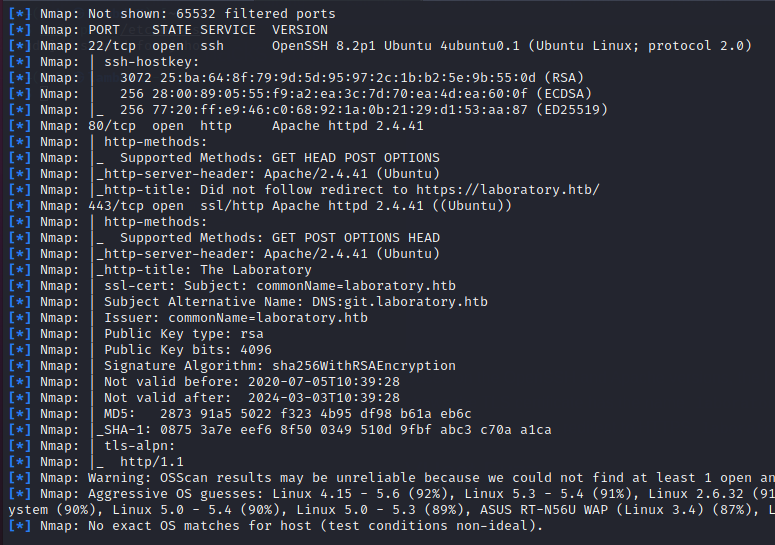

Tunkeutumistestaus -kurssin raportti, osa 5
Tämä on tehtäväraportti Haaga-Helian Tunkeutumistestaus -kurssilta, missä tarkastelemme erilaisten järjestelmien tietoturvallisuutta ja tarkastellaan miten hakkerit näkevät järjestelmän pyrkiessään tunkeutumaan niihin.
Raportin tekijä: Jyrki Aho
HTB: Bucket
Ryhdyin hyökkäämään Bucket nimistä harjoituskonetta vastaan. Totesin ettei kyseinen harjoituskoneen löytäminen oli hankalaa, mutta löysin sen lopulta. Ongelmia sen löytymisessä aiheutti se, että se on ilmeisesti poistuva harjoituskone.
Kuten aina ennen hyökkäystä, niin tiedustelin konetta komennolla nmap -O -sV -sC 10.10.10.212 -v -oA bucket, jolloin sain tarkastettua että portit 22/TCP OpenSSH 8.2p1 Ubuntu 4 (Ubuntu Linux, protocol 2.0) ja 80/tcp Apache httpd 2.4.41 ovat auki. Kokeilin tämän jälkeen tarkistaa vielä UDP-porttien aukiolon, mutta totesin että nämä portit ovat kiinni. Koska portti 80 oli auki, niin kokeilin käydä vilkaisemassa millaisilta kyseinen sivu näyttää, mutta sivusto ohjaa kävijät automaattisesti muualle. Kokeilin tämän jälkeen wfuzz ohjelmaa tarkastellessani sivua. Sitä ennen jouduin googlettamaan erikseen txt-tiedostoa, jota käytettiin kyseisessä skannauksessa. Latasin kyseisen tiedoston koneelleni ja kokeilin skannata uudestaan sivustoa. Tällöin ilmeni että s3 palautti vastausken, mutta muista palveluista ei palautunut vastausta. Blogin kirjoittaja tiesi s3:sta, kun taas itse en tiedä miten blogin kirjoittaja päättyi tähän lopputulokseen. Ymmärsin lopulta tuon ohjeen ja kävin lisäämässä etc/hosts tiedostoon rivin 10.10.10.212 bucket.htb. Tosin tuolla ei selitetty, miksi tämä toimenpide antaa luvan selata kyseistä sivua, eikä selain automaattisesti ohjaa muualle.
Löysin Eric Baysin walktrough sivun, missä hän murtautuu kyseiselle koneelle. Laitoin selaimeen osoitteen s3.bucket.htb, jolloin ohjelma palautti halutun JSON-tiedoston, minkä header-tiedostosta ilmeni että kyseinen sivusto on varmasti tehty Amazon Web Servicellä. Tämän jälkeen ajoin gobuster dir -u http://bucket.htb -w /usr/share/wordlists/dirbuster/directory-list-lowercase-2.3-medium.txt -t 25 -x php,txt -komennon, minkä tarkoituksena on ymmärtääkseni löytää piilotetut tiedostot halutussa palvelussa. Ilmeisesti tämä kyseinen sanalista, joka liitettiin mukaan sisältää yleisimpien piilotettujen tiedostojen nimet. Baysin mukaan hyökkäys kohdistui erityisesti php ja txt-tiedostoihin, koska nämä ovat yleisimmät tiedostot Apache palvelimilla. Gobusterin ajo kesti sen verran kauan, että aloitin ajamaan samanlaisen etsimisoperaation osoitteessa http://s3.bucket.htb.
Kirjainyhdistelmä s3 viittaa siihen, että Amazonin S3 on Amazonin tarjoama pilvitallennuspalvelu. Ilmeisesti culrin avulla voitaisiin hyökätä järjestelmän kimppuun,mutta tämä on hyvin pitkällinen prosessi, minkä vuoksi suositellaan asentamaan awscli -ohjelma, mitä voidaan käyttää kun ryhdytään tarkastelemaan Amazonin S3 palvelua. Asensin AWS CLI ohjelmiston komennolla sudo apt install awscli -y, minkä jälkeen configuroin sen, kuten Bays sanoi. Ilmeisesti oli aivan sama millaiset arvot ohjelmaan laittaa. Yritin kirjautua AWS:n hallinnoimaan shelliin komennolla http://s3.bucket.htb/shell, jolloin tuli ilmoitus mahdollisesta kirjoitusvirheestä 44af250749d. Bays huomasi url-kentässä olevan portin, joka viittaisi siihen, että kyseiseen shelliin pääsee käsiksi ainoastaan lokaalisti. URL-osoitteella http://s3.bucket.htb/health päästiin kurkkaamaan hieman koneen alle, jolloin selvisi että kyseisessä serverissä käytettiin dynamon tietokantaa. Havaitsin mielenkiinnolla, että vaikka shelliin ei päästä käsiksi, niin dynamon tietokantaan päästään kuitenkin käsiksi shellin avulla. Komennolla aws dynamodb list-tables --endpoint-url http://s3.bucket.htb päästiin näkemään, että tietokannassa löytyy users taulu. Koska tämä yhteys oli jäänyt avoimeksi, niin ajamalla komennon aws dynamodb list-tables --endpoint-url http://s3.bucket.htb, niin päästään näkemään käyttäjien selkokieliset tunnukset ja salasanat. Thomas de Grootin mukaan LocalStack on rakennettu imitoimaan AWS:ää paikallisesti, niin sen vuoksi portti 4566 on auki. AWS:ssä pitäisi antaa suojatut salasanat ja vastaavat, mutta LocalStackissa sillä ei ole väliä vaan on syötettävä niin sanotut dummy-arvot.Yllättäen shell komento toimi kun ensin olin yrittänyt mennä osoitteeseen http://s3.bucket.htb:4566/shell ja tämän jälkeen menin osoitteeseen http://s3.bucket.htb/shell. Tallensin nämä salasanat komenolla aws --endpoint-url http://s3.bucket.htb dynaodb scan --table-name users | jq -r 'Items[].password.S' > passwords. Yritin murtautua Hydran avulla, mutta hyökkäys kesti ehkä turhankin kauan ja ohjelma ei kertonut mitään kuinka hyvin se eteni. Kokeilin myös pienentää user listaa 4:n kirjaimen yhdistelmiin ja kokeilin Patriottia ja totesin senkin olevan erittäin hidas salasanojen murto-ohjelma. Tämän vuoksi käytän jo löytynyttä käyttäjätunnusta roy:ta murron tekemiseen. Tämän jälkeen henkilö avasi yhteyden järjestelmään, jotta kautta järjestelmään voi lisätä tiedostoja. Tosin jäin hieman jumiin tähän kohtaan, koska tässä kohtaa pitäisi kikkailujen avulla muuttaa itsensä rootiksi.
Lähteet
Bays, E. 2021. Bucket has been Pwned. Luettavissa: https://idiothacker.com/hackthebox-walkthrough-bucket/. Luettu: 29.4.2021.
Groot, T. 2020. Running AWS locally with LocalStack. Luettavissa: https://blog.jcore.com/2020/04/running-aws-locally-with-localstack/. Luettu: 29.4.2021.
Oxdf Hacks stuff, 2021. HTB: Bucket. https://0xdf.gitlab.io/2021/04/24/htb-bucket.html. Luettu: 29.4.2021.
HTB: Laboratory
Skannasin tietokoneen aluksi nmapin avulla, jolloin selvisi, että portit 22/TCP, 80/TCP ja 443/TCP ovat auki. Palvelimella on käytössä Ubuntu ja Apache 2.4.41. Skannauksen perusteella palvelimen voidaan muodostaa ssh yhteys ja käytössä on http ja https protokollat. Lisäksi palvelimella on käytössä sellaiset osoitteet kuin https://laboratory.com ja https://blog.jcore.com/2020/04/running-aws-locally-with-localstack/. Ensimmäinen ihmetyksen aihe oli, että miksi git-puolen palvelimessa käytettiin http:tä, varsinkin kun siellä myös kirjaudutaan sisälle järjestelmään. Tarkastelin 0xdf Hack Stuffin hyökkäystä ja siellä hän oli tehnyt githubiin hyökkäyksen. Kokeilin searchploitilla etsiä hyökkäystapaa ja nyt ymmärsin miten kyseinen ohjelma suurinpiirtein toimii. Löysin python koodin, minkä perusteella sivuston kimppuun voidaan hyökätä. Kuten sivustolla mainittiin, niin itsekään en saanut hyökkäystä toimimaan koodin avulla, mutta koodi on yksinkertaisen selkeä ja siinä hyökkäys tehtiin samalla tavalla kuin se esitettiin 0xdf:n sivulla. Toisin sanoen luodaan kaksi projektia gitlabiin. Tämän jälkeen luodaan issue, minne upotetaan erikoiskoodi, sekä haluttu tiedosto joka halutaan kaapata. Tämän jälkeen tämä issue siirretään toiseen projektiin, jolloin tiedostomuoto muuttuukin koneen mielestä kuvkasi. Kun kuvan avaa, niin se ei aukeakaan kuvana, vaan näyttää halutun tiedoston serverikoneelta. Hain samalla tavalla tiedoston /etc/passwd:n kohdekoneelta. Yritin testata jos kyseisellä komennolla olisi voinut napata /etc/shadow tiedoston, mutta tämä ei onnistunut.
Hyökännyt henkilö oli löytäntyt Python koodipätkän, jonka avulla palvelimen käyttöjärjestelmän pystyi selvittämään. En ainakaan itse keksinyt miten tätä tietoa pystyisi hyödyntämään, vaikkakin Ubuntu 16:stä löytyykin aukkoja. Erityisesti Searchsploit tarjosi muutamia mahdollisia hyökkäystapoja näiden järjestelmien käyttöön.
Lähteet
Oxdf Hacks stuff, 2021. HTB: Laboratory. https://0xdf.gitlab.io/2021/04/17/htb-laboratory.html. Luettu: 29.4.2021.
HTB: Armageddon
Suoritin aluksi portssikannauksen komennolla nmap -sS -sV -O -v 10.10.10.233, jolloin sain selville että portit 22 ja 80 ovat auki. Portti 22 ymmärtääkseni viittaisi siihen, että järjestelmään saadaan muodostettua SSH -yhteys ja 80 siihen,että järjestelmässä toimii http-palvelin. Menin webiselaimella kyseiseen osoitteeseen ja näinkin, että sen webbisivut toimivat moitteettomasti. Tämän jälkeen ajoin gobuster ohjelman, jonka avulla näin piilotetut tiedostot. Yhdestä tiedostosta selvisi, että järjestelmässä on käytössä Drupal 7.56, josta löytyy haavoittuvuuksia. Kokeilin metasploittia hyökkäystyökaluna ja metasploit ilmoitti, että haavoittuvuus on olemassa, mutta reverse tcp yhteyttä ei voitu muodostaa. Ihmettelin miksi näin. Lisäksi järjestelmästä löytyi request new password -välilehti, jonka perusteella voidaan päätellä onko jokin tunnust tai käyttäjänimi käytössä. Minulle jäi vähän epäselväksi, mitä hyökkäystyökalua käyttää tähän järjestelmään.
Koska en oikein saanut selvitettyä näitä hyökkäystyökaluja, niin koitin selvittää netistä mahdollista hyökkäystapaa ja löysin blogin, missä kerrottiin yhden käyttäjän tavasta hyökätä järjestlemän kimppuu. Mikäli olisin käyttänyt nmapin yhteydessä -A parametria, niin olisin jo tässä vaiheessa saanut selvitettyä, että järjestelmässä on drupal järjestelmä käytössä. Vaikka kuinka skannasin nmapilla, niin pystyin totetamaan että vain kaksi porttia on auki. Eli en tiedä miten kyseisen blogin kirjoittanut henkilö on voinut todeta, että kyseisellä palvelimella olisi useampi portti auki. Kyseisessä artikkelissa käytettiin metasploittia ja hyökkäystyökaluna Drupalgeddon 2:sta, kuten minäkin olin käyttänyt aikaisemmassa testauksessa, kun totesin Drupalissa olevan haavoittuvuuden. Henkilö pääsi sisälle järjestelmään kyseisen komennon avulla, mutta minulla metasploit ei suostunut luomaan sessiota, jotta olisin voiut hyödyntää murtautumsiessa. Yritin muutaman kerran sisälle, mutta jostakin syystä minun hyökkäykseni eivät läpäise kyseistä palomuuria, vaikka siinä havaittiinkin heikkous. Katselin sitten lopulta videon loppuun ja tämän hyökkäystavan ymmärsin. Mutta en ymmärtänyt, miksi videolla kyseinen hyökkäys toimi erinomaisesti, mutta omassa koneessa oleva metasploit ei suostunut murtamaan kohdetta.
Lähteet
htctfwalktrough 2021. Luettavissa: https://htbctfwalktrough.blogspot.com/2021/04/hackthebox-armageddon-walktrough,html?m=1. Luettu: 1.5.2021.
WuDaDaDang 2021. Armageddon! Katosttavissa: https://youtube.com/watch?v=ChDLsU1Uwl8. Katsottu 1.5.2021.
HTB: Time
Tämä Hack the Boxin kone vaikutti hieman mielenkiintoiselta, koska siinä hyökättiin järjestelmän kimppuun JSONin avulla. Nmapin mukaan järjestelmässä olisivat portit 22 ja 80 auki. Ilmeisesti kyseessä on Ubuntu käyttöjärjestelmällä varustettu serveri, missä on käytössä Apache 2.4. Videon mukaan kyseiseen koneeseen hyökättäisiin JSON formaatin haavoittuvuuden CVE-2019-12384 avulla ja siten saadaan muodostettua yhteys shelliin. Totesin että kyseisessä videossa on mielenkiintoinen hyökkäystapa, missä yhdistetään Java -ohjelmointikieltä ja pythonia serveripalvelujen tekemiseen. Ihmettelin myös komentoa nc, mikä onkin ilmeisesti jonkinasteinen portinkuuntelija. Pitää laittaa tämä korvan taakse, jos sitä kautta saisi paremmin kaapattua koneen liikenteen, kun ZAPissa pientä ongelmaa. Lisäksi videolla esitellyt reverse shell komennot vaikuttivat mielenkiintoisilta. Olin kuvitellut niiden olevan jonkinlaisia ohjelmia, joiden avulla saadaan luotua aukko järjestelmään ja siten ujutettua hyökkääjä sisään järjestelmään. Mutta ne ovatkin lyhyitä koodinpätkiä, jotka mahdollistavat ajettaessa lokitietojen siivouksen ja yhteyden muodostamisen samassa ketjussa. Minulle kyllä toisalta jäi vähän epäselväksi, missä kohtaa käyttäjä sai ujutettua tämän injektion sisälle. Jos oikein tulkistin videota, niin hyökkääjä menee niin sanotusti sivummalle, ja sieltä ujuttaa tiedon järjestelmään oman servrin kautta, joka lähettää tiedot kohdekoneelle. Tämän jälkene hyökkääjä ujuttaa sivustolle lisää komentoja ja siten saa itsellensä shellin ja lopulta rootin oikeudet.
Lähteet
Motasem Hamdan, 2021. JSON Deserialization Vulnerability - HackTheBox Time - CVE-2019-12384 Jackson RCE. Katsottavissa: https://www.youtube.com/watch?v=1ngJJPvKn0Q. Katsottu: 1.5.2021.
HTB: Yhteenveto
En ole aivan varma ehdinkö nappaan viittä erilaista työkalua varastoon, kun en pitänyt niin tarkkaa kirjanpitoa hyökkäysten tarkasteluissa. Kokeilin sivustoilla olleita työkaluja kartoittaessani sivustoja ja piilotettuja hakemistoja. Erääseenkin koneeseen kokeilin yhtä skannausta, mutta ilmeni että kyseisessä koneessa oleva serveri järjestelmä ei sopinut kyseisen ohjelman skannattvaksi. Olisin myös onnistunut murtautumaan yhteen hack the boxin koneeseen, jos metasploit olisi toteuttanut sen hyökkäyksen, mitä yritin suorittaa sen avulla. Minulle jäi vain epäselväksi se, mihin kyseinen hyökkäys oikein kaatui, kun metasploit ei palauta selkeää palautetta, mistä voisi päätellä, miksi hyökkäys eivain toiminut.